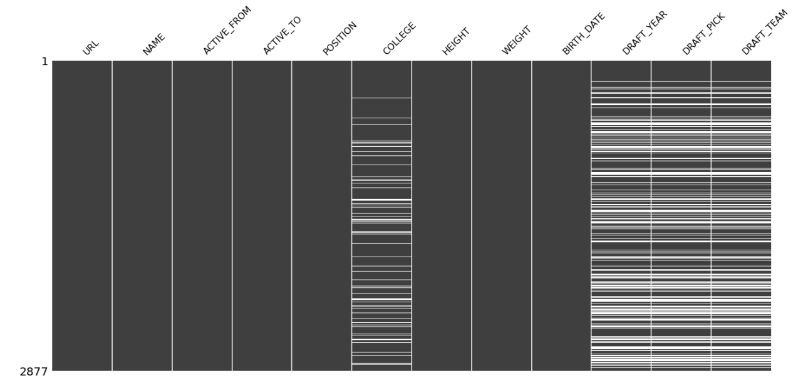
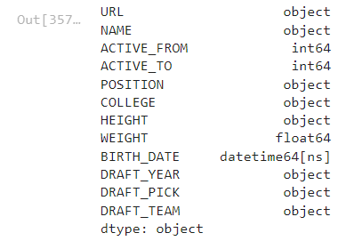
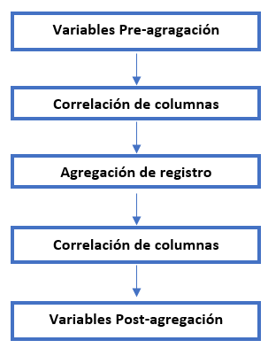
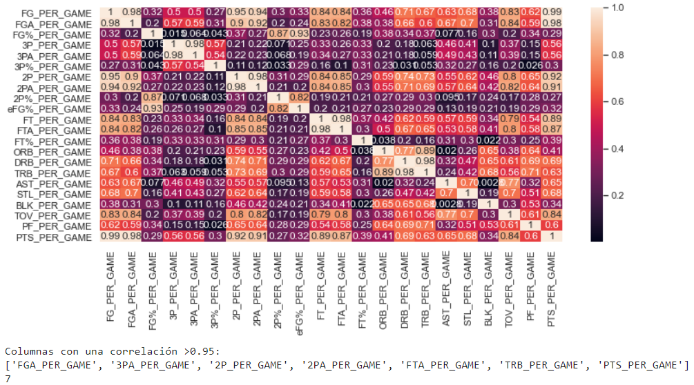

NBA CAPSTONE PROJECT
El draft de la NBA (1947) es un procedimiento de selección de jugadores para entrar en la NBA por el cual las franquicias que forman parte de la liga incorporan a sus equipos jugadores menores de 23 años procedentes de las universidades norteamericanas o de las ligas de otros países.
En el presente trabajo se realizará un modelo de clasificación de todos los jugadores que han participado en la NBA a partir de los datos históricos recopilados desde el año 1986. Para ello, se han scrappeado las estadísticas de juego de todos los jugadores desde dicho año a través de la página web Basketball Reference y tras un proceso de data cleaning y feature engineering se han agrupado en clústers los tipos de jugadores que han sido en su trayectória deportiva. Esta clasificación podría utilizarse para crear un modelo predictivo para predecir qué tipo de jugador puede llegar a ser cada jugador que se presenta al Draft 2022 a partir de sus estadísticas históricas del college.
Data Scraping
Metodología
El Data Scraping es una técnica de programación que consiste en la extracción masiva (mediante ingeniería inversa) de datos mediante la descarga de la información subyacente en objetos que almacenan datos generalmente no estructurados (por ejemplo, en nuestro caso, datos de los archivos HTML fuente de las páginas de Basketball Reference).
En el contexto del proyecto desarrollado "Clusterización de jugadores de la NBA para posterior aproximación/predicción de la tipología de jugadores que participarán en el Draft de 22" , el apartado de Data Gathering (obtenicón de datos) se ha llevado a cabo mediante el scrapping de datos. Principalmente se han extraído (mediante librerías específicas de Phyton) estadísticas medias por temporada para cada jugador de la NBA de la página web Basketball Reference.
En referencia a la metodología utilizada, basándonos principalmente en las librerías y frameworks propuestos por Pandas y BeautifulSoup, descargamos la información de los HTML de las distintas webs y recorremos la estructura de árbol hasta capturar las tablas u objetos con los datos que sean de nuestro interés para el proyecto. A continuación, los almacenamos en DataFrames y acabamos obteniendo objetos tabulares que aglutinan toda la información que usaremos a posteriori en otros notebooks.
En las siguientes imágenes se expone el data set original de la página web Basketball Reference juntamente con el output del data scrapping programado para extraer las estadísticas que son de nuestro interes.


La siguiente función de Data Scrapping localiza en la página web de origen el nombre de todos los jugadores que han jugado en la NBA según el registro de la misma página y retorna un output de un objeto tabular con los nombres registrados ordenados alfabéticamente. En esta tabla encontraremos una lista de todos los jugadores que han pasado por la NBA e información básica sobre ellos: peso, altura, años en activo, posición, college y fecha de nacimiento
Una vez se han scrapeado los datos con todos los jugadores registrados en la página web original, se procede a extraer la información individual para cada jugador siguiendo la metodología del data scraping. Se han considerado las siguientes funciones:
Función que captura el objeto tabla determinado en los argumentos (según el tipo de estadística que se quiera capturar), presente en la página web del jugador del que se quiere scrapear las estadísticas NBA. Se puede decidir si se quiere obtener estadísticas medias por temporada o medias totales de carrera profesional, si son estadístcas de Regular Season o de Playoffs y si se quiere extraer las estadísticas en general o por equipo en el que haya jugado el jugador.
Función que permite recuperar información extra o específica de cada jugador que no se encuentra presente en objetos tabulares, sinó en objetos rectangulares específicos de HTML. Con esta función se quiere obtener informormación relacionada con títulos y reconocimientos idividuales (MVP, Hall-of-Fame, ROY, etc.) y colectivos (NBA Champion, Conference Champion, etc.).
Función que permite recuperar en qué equipos y en qué intervalos de tiempo los jugadores formaron parte de ciertos equipos. Los objetos con esta información no son objetos tabulares, sinó objetos rectangulares específicos de HTML.
Función que captura el objeto tabla determinado en los argumentos (según el tipo de estadística que se quiera capturar), presente en la página web del jugador del que se quiere scrapear las estadísticas de COLLEGE. Se puede decidir si se quiere obtener estadísticas medias por temporada o medias totales de carrera en college, estadísticas medias por temporada o torneo de conferencia (en caso de tenerlas) y si se quiere extraer las estadísticas en general o por equipo en el que haya jugado el jugador.
Función que permite recuperar información extra o específica de los jugadores durante su época de college y que no se encuentra presente en objetos tabulares, sinó en objetos rectangulares específicos de HTML. Con esta función se quiere obtener información relacionada con títulos y reconocimientos individuales (Big East Tourney MVP, etc.) y colectivos (NCAA Champion, Conference Champion, etc.).
Función que permite recuperar en qué equipos y en qué intervalos de tiempo los jugadores formaron parte de cada equipo durante su época college.
Función que permite obtener un DataFrame con un registro para cada jugador de la NBA draftedo con información básica sobre el Draft (número de pick, college, etc.).
Función que permite recuperar todos los equipos que han participado en la liga NBA a lo largo de la historia.
Data Cleaning
Metodología
El Data Cleaning o limpieza de datos engloba varios procesos destinados a mejorar la calidad de los datos anteriormente extarídos mediante Data Scraping. Estos procesos se utilizan para corregir o eliminar registros inexactos en una base/conjunto de datos. En general, esto significa identificar y sustituir los datos o registros incompletos, inexactos, corruptos o irrelevantes.
Tras scrapear los datos, se ha llevado a cabo un análisis para detectar las estadísticas incompletas de cada jugador registrado. Se observa una ausencia de datos en los jugadores más antiguos, dado que muchas estadísticas no existían o no se tenían en cuenta en ese intervalo de tiempo. Por ello, se decide filtrar todos los jugadores scrapeados según su inicio deportivo como profesional y tener en cuenta únicamente los datos de los jugadores activos a partir de 1986, coincidiendo con la implementación del tiro de triple puntuación.
Para llevar a cabo el proceso de detección de datos incompletos, tras clasificar todos los jugadores y sus respectivas estadísticas en un raw data, se han localizado los datos incompletos mediante la instrucción ".isnull().sum()". Este comando nos permite detectar las estadísticas vacías de cada jugador registrado en el raw data y calcular qué porcentaje de datos quedan incompletos por cada variable scrapeada. Obtenemos un dataframe de cada variable donde los datos incompletos quedan visualizados en blanco:
Existen jugadores registrados que, por ejemplo, no tienen datos de Colllege debido a que saltaron directamente a la NBA o que no fueron drafteados, jugadores que no disponen de ciertos datos debido a que tuvieron poca participiación durante una (o varias temporadas) o jugadores que no tiraron ningún triple durante una (o varias) temporadas . Estos son algunos ejemplos de los motivos que pueden justificar la ausencia de datos.
Tras filtrar los jugadores a partir del año 1986 y localizar los datos incompletos, se procede a la comprobación del tipo de variable a través de la instrucción ".dtypes()". De esta forma, podemos modificar el tipo de variable según sea conveniente para el análisis individual de cada estadística y comprobar que el tipo de datos que se usarán posteriormente para el feature engineering y la determinación de los clústers son correctos.
Una vez loccalizados los datos incompletos y el tipo de variable de estos, se procede a rellenar los vacíos de forma que pueda llevarse a cabo el posterior estudio de clustering (por ejemplo, se rellenan con "0s" los datos relacionados con lanzamiento de triples vinculados a jugadores que no han tirado desde la línea de 3 o se rellena con "undrafted" los jugadores que no fueron drafteados).
Feature Engineering
Metodología
El Feature Engineering o transformación de datos son los pasos de preprocesamiento que transforman los datos sin procesar en características que se pueden usar en algoritmos de aprendizaje automático, como por ejemplo modelos predictivos (machine learning). El proceso de Feature Engineering seguido en el presente proyecto ha seguido los 3 pasos siguientes:

Tras el data scraping y el data cleaning se obtienen las estadísticas por temporada, por lo que se obtienen varias filas por cada jugador scrapeado. Con el objetivo de llevar a cabo el data modelling (clustering) se requiere clasificar todas las variables de nuestro interés en una única fila por jugador. Para ello, en esta sección se decide generar variables creadas a partir de medias generales o particulares de las temporadas registradas. Este tipo de variables pueden ser de la siguiente forma:
- Cálculo de la media de la variable X a lo largo de la carrera (todas las temporadas)
- Cálculo de la media de la variable X de las primeras y últimas temporadas del jugador (evolución deportiva).
- Cálculo de la media de la variable X de las temporadas significativas del jugador.
- Cálculo de la media de la variable X de las temporadas que el jugador ha jugado Playoffs.
- Cálculo de la media de la variable X de las temporadas que el jugador ha jugado y ha ganado los Playoffs (NBA Champion).
.
El objetivo de la siguiente sección se resume en simplificar la cantidad de variables (columnas) por jugador registrado, antes y después de la agregación. Para ello se lleva a cabo un estudio de correlación para localizar las variables que se consideran dependientes y se elimina una de ellas. Se impone una condición de correlación del 95% para determinar que dos variables son dependientes:
Visualización
En la presente sección se ha realizado una presentación dinámica con la herramiento PowerBI para visualizar graficamente algunos de los dtaos utilizados para el proyecto. La presentación se divide en las diferentes secciones llevadas a cabo en el proyecto:
En el apartado Data Scraping se visualizan los gráficos de algunas de las estadísticas básicas scrapeadas en el proceso
When forced indoors, I follow a number of sci-fi and fantasy genre movies and television shows, I am an aspiring chef, and I spend a large amount of my free time exploring the latest technology advancements in the front-end web development world.
Data Modelling (clustering)